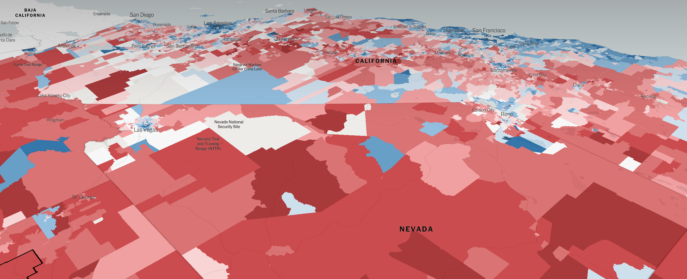

Many an earnest cartographer/journalist/opinion-holder is currently debating — with varying degrees of condescension — the utility of the @nytimes’ latest map piece:
Some people argued that we should have used opacity or a dot map to adjust for population density in our 2016 precinct maps. fwiw, here's why we didn't... https://t.co/RSqOlJx7SB
— Josh Katz (@jshkatz) July 27, 2018
While some arguments are specious (specifically, I’m not sure what species of monster you have to be to fail to enjoy a good birds-eye perspective), and others are just petty, the most valid argument wrangles with the nature of our Republic, and how best to convey that Acres don’t vote.
Helpful New York Times Map Reveals How Much Empty Space Voted For Empty Suit Trump
— Wonkette (@Wonkette) July 27, 2018
https://t.co/I6epuMbcSz by @SER1897
Obviously, acres don’t vote, people do. And the proportions between the two are hardly linear in our basket-case vastness of a country. There are whole other maps and tweetologues covering the fact that entire census tracts are populated only by crows and/or otters.
Obviously, acres don’t vote, right?
But as I was reading through James Michener’s “The Covenant” a few day ago, I came across a phrase that I thought had never been uttered among the citizens of a nominal democracy:
“. . . those former towns, now abandoned or much reduced in population, which clung to ancient privileges on the principle that ‘Parliament represents land, not people.’ So that even in these early years of the nineteenth century one-fourth of the members of Parliament came from boroughs which in common sense should have returned nobody, and a shocking percentage of these were from boroughs like Old Sarum, which contained almost no one.”
[And indeed, these exact words probably haven’t; this is a work of historical fiction after all]
A bit of research revealed that, in the period surrounding the English Civil War, there were pitched battles in Parliament over the appropriate balance of representation between County and Borough, the result being that, by the time our own forebears in the Americas were getting uppity about taxes, the idea of population-based representation in a constitutional monarchy [or democracy, whatever] was still no more than a generation or two old.
We can see the fading-but-still-grasping echoes of “Parliament represents land” in our Senate, in our Electoral College. It doesn’t take many leaps of a modest imagination to see that perhaps the votes of acres do count for more than the votes of people in certain contexts.
The acres of Michigan are roughly equal to the acres of Wyoming, and they cast the same number of votes in the confirmation of a Supreme Court Justice, failing along the way to notice that there are 20 Michiganiacs for every 1 Wyomista. The acres of Vermont are roughly equal to the acres of New Jersey, so it may seem unfair that the former casts only 3 votes to choose a President, while the latter casts 14. But there are 15 Jersers for every Vermontian, so perhaps it’s a compromise.
The pressure ridge between land and population as the representative standard of a Republic is still visible in our country. We watch in horror as its contours are terraformed back and forth by enterprising gerrymandrists. “Land” in this sense is a shorthand for “Power”, and maybe it always has been. “One acre one vote” can concentrate power in greedy and selfish hands, and is fundamentally antidemocratic.
“One person one vote” was radical when we declared independence, and remains so radical that it has never been at peace, always under attack, never fully implemented.
Maybe a map that reflects such a status — even unintentionally — is telling the truth.
Red deserts